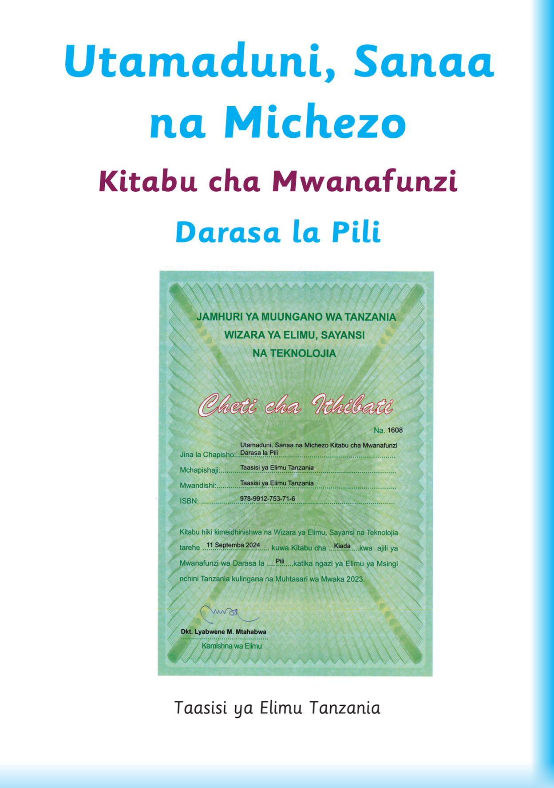

Utamaduni, Sanaa na Michezo, Kitabu cha Mwanafunzi, Darasa la Pili

Taasisi ya Elimu Tanzania. ISBN 978-9912-753-71-6. Cheti cha ithibati namba 1608 cha tarehe 11 Septemba 2024, kilichosainiwa na Dkt. Lyabwene M. Mtahabwa, Kamishna wa Elimu.Ukurasa una kichwa cha kitabu, jina la Taasisi ya Elimu Tanzania, mwaka 2024 na ISBN 978-9912-753-71-6. Sehemu ya chini ni cheti cha ithibati namba 1608, chenye tarehe 11 Septemba 2024 na saini ya Dkt. Lyabwene M. Mtahabwa, Kamishna wa Elimu.